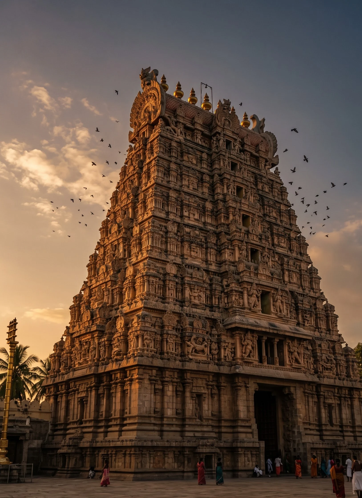

SVARA
SVARA
Our Story
Three generations of one weaving family in Kanchipuram, and the lamps that have lit their looms since 1962.
Every saree has
its own rhythm
We named our house after svara, the seven notes of Carnatic music, because a loom has a rhythm too: the clack of the shuttle, the press of the pedal, the lift of the warp.
"A saree should be woven slowly enough that the weaver remembers it, and well enough that a granddaughter wears it."
Meenakshi Sundaram · Third generation

Sixty years at the loom
- 1962
One pit loom
Sundaram Mudaliar sets up a single loom in his house on Gandhi Road, weaving temple sarees on order.
- 1979
The korvai looms
His sons add four looms and specialise in contrast korvai borders for wedding sarees.
- 1998
Pure zari only
The family stops using tested zari altogether, even when it costs them half their orders.
- 2014
Silk Mark
Every saree is certified by the Silk Mark Organisation of India and carries its weaver's name.
- 2026
SVARA
The third generation opens SVARA, a store and atelier above the looms, so you can watch your saree being made.

Five stages,
about forty days
From the day the silk arrives to the day it leaves in muslin, a bridal Kanchipuram passes through five pairs of hands.
How a SVARA saree
is made
The silk
Raw mulberry silk from Karnataka is twisted into three-ply yarn for the body. We test every batch for strength before it is dyed.

The colour
The yarn is boiled to remove its gum, then dyed by hand in copper vats. Body and border are dyed separately for korvai.

The warp
Thousands of threads are stretched along the street outside the looms at dawn, then wound onto the beam. The jacquard cards are set for the border.

The weaving
Two weavers work the pit loom together, interlocking body and border at every pass. A bridal saree takes about 24 days.

The finish
The saree is cut from the loom, checked thread by thread, Silk Mark tagged and folded in muslin with the weavers' names on a card.
The hands behind the loom
Fourteen weavers work at our looms. Here are three of the longest-serving.
Selvi Murugan
Pillaiyarpalayam, KanchipuramWeaves our widest temple borders. She learned korvai from her mother at eleven and still sets the jacquard cards by memory.
Ravi Shankar
AyyampettaiOur pallu specialist. Every peacock and lotus pallu in the Muhurtham Edit begins as one of his drawings on graph paper.
Kavitha Raman
Gandhi Road, KanchipuramThe family's youngest master weaver and the first woman of her family to run her own loom. She weaves our tissue silks.
What every saree carries
Pure zari
Silver wire electroplated with gold. Never copper, never plastic.
Mulberry silk
In every Kanchipuram body, for weight and a drape that lasts.
Weaver's card
With the names of the people who wove your saree.
To the loom
Of every saree's price goes to its weavers, paid on the day it leaves the loom.

"The temple is built once. The saree is woven again by every generation, and each one adds a little of itself to the border."A saying from the Kanchipuram looms